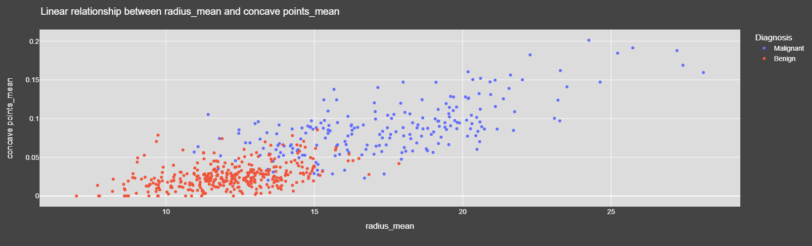
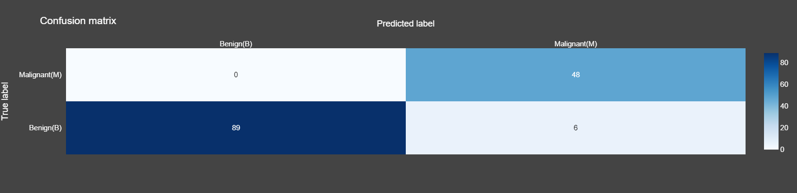

In this personal project, the main purpose is classifying benign or malignant of breast tissues
All of the steps of brief overview are done on Google Colab
Website for interactive visualization here
Linear regression visualization
Confusion matrix visualization
